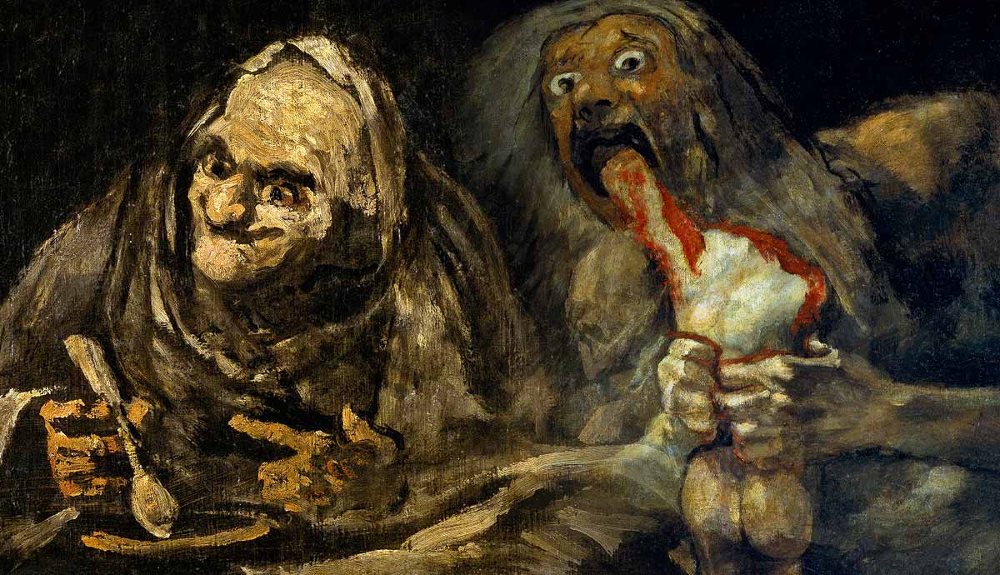

Francisco Goya: Deafness and Descent into Darkness
Francisco Goya (1746–1828) was a famous Spanish painter and printmaker who worked during a time of big political and social change. He became the official painter for the Spanish royal family, and he was known for his skill in capturing people’s personalities, emotions, and everyday life. Over time, he became one of the most important artists in European history.
When darkness took over
After a serious illness in the early 1790s, Goya lost his hearing. This had a huge impact on him. Being deaf made him feel isolated and more aware of the darker side of life. His paintings changed from bright, elegant, and cheerful scenes to much darker, deeper, and more emotional works. He began to show fear, violence, sadness, and the struggles of humanity. This change is especially clear in his later works, including the Black Paintings, where he used dark colors, strange figures, and intense expressions to show his inner thoughts and the harsh realities around him.